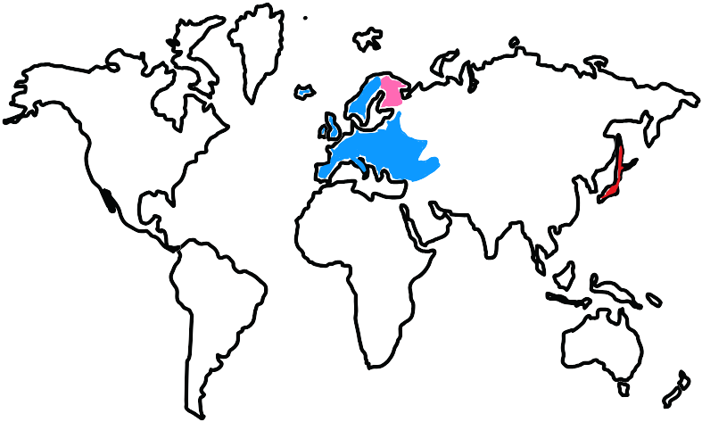

Matkailu on enemmän kuin pelkkää paikasta toiseen siirtymistä. Se on seikkailu, joka avaa ovet uusiin
muistoihin, maisemiin ja makuelämyksiin. Jokainen reissu on tilaisuus kokea jotakin ainutlaatuista,
olipa kyse sitten tunnelmallisista kahviloista Wienissä, upeista maisemista Kolin kansallispuistossa
tai futuristisista kaupunkimaisemista Tokiossa.
Tältä sivustolta löydät parhaat vinkit ja inspiroivat tarinat, jotka saavat matkakuumeen kohoamaan.
Haluatko tietää, mitkä ovat Euroopan kiehtovimmat kaupunkilomat? Tai mitä Japanissa kannattaa ehdottomasti
kokea? Entä mitkä kotimaan kohteet yllättävät taianomaisuudellaan? Sukella mukaan ja löydä seuraava unelmiesi
matkakohde!
Olitpa sitten spontaani reppureissaaja, tarkkaan suunniteltujen seikkailujen ystävä tai vasta haaveilemassa
seuraavasta matkasta, täältä saat tarvittavan inspiraation. Maailma odottaa, oletko valmis lähtemään?
